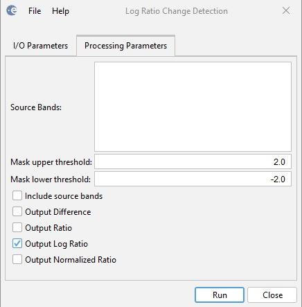

Log Ratio Change Detection
The operator performs
change detection by computing the difference, ratio, log ratio and
normalized ratio of given image pair. Input
- It is assumed that the input product is a stack of two co-registered images.
Output
- The output are the target bands corresponding to the user selected ratios.
Parameters Used
The following parameters are used by the operator:
- Source Bands: Two bands selected by the user for change detection. If no bands are selected, then
by default the first two intensity or amplitude bands are used. Let's denote the first band as B0 and the second band as B1.
- Mask upper threshold: Upper bound
used in creating the change mask. Pixel in the target band
with value that is greater than this threshold will be masked as
1.
- Mask lower threshold: Lower bound
used in creating the change mask. Pixel in the target band
with value that is less than this threshold will be masked as
-1. Anything between the two thresholds will be masked as 0.
- Include
source bands: If the checkbox is selected, the two source bands
selected by the user will be output in the target product.
- Output Difference: If the checkbox is selected, then the "difference" band (B0 - B1) will be output.
- Output Ratio: If the checkbox is selected, then the "ratio" band (B0 / B1) will be output.
- Output Log Ratio: If the checkbox is selected, then the "log_ratio" band (log(B0 / B1)) will be output.
- Output Normalized Ratio: If the checkbox is selected, then the "normalized_ratio" band ((B0 - B1) / (B0 + B1)) will be output.

Figure 1. Log Ratio Change Detection dialog box